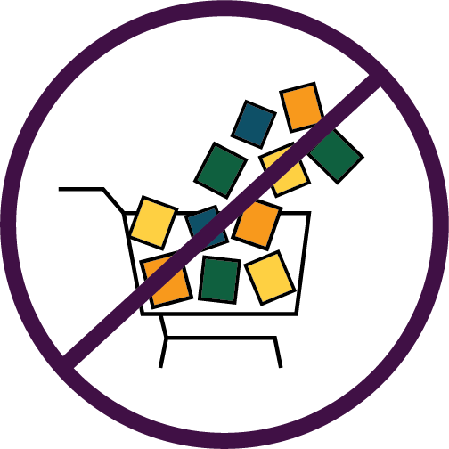

Consume Less
What Is Overconsumption?
Overconsumption refers to the excessive and unsustainable consumption of goods and services beyond what is necessary for a comfortable and fulfilling life. This can take many forms, such as overeating, overuse of natural resources, overuse of technology, and over-reliance on consumerism.
How does it impact the environment?
Overconsumption means consuming resources that we cannot replenish or that cannot sustain themselves at the rate we are consuming them. Ecosystems are unable to cope with excessive resource extraction, resulting in biodiversity loss and the deterioration of the natural world.
What can we do to help this issue?
Instead of giving in to impulse buying or buying things you don't really need, make a list of what you need and stick to it.
nvest in high-quality products that are durable and long-lasting, instead of buying cheap, disposable products that need to be replaced frequently.
Adopt a minimalist lifestyle by owning and buying only what is necessary and meaningful to you. This not only reduces overconsumption but can also lead to a more fulfilling life.
Practice the 3Rs (reduce, reuse, recycle) by reducing the amount of waste you generate, reusing items as much as possible, and recycling materials that can be reused.
Choose products and services that are environmentally sustainable, socially responsible, and ethical.
Before making a purchase, consider the environmental and social impacts of the product and whether you really need it.
Educate yourself and others on the impact of overconsumption and the benefits of sustainable living. Share information on social media and other platforms to spread awareness.
